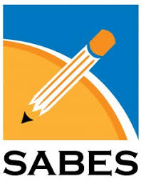

- C++
- C++ fue creado en 1979 por Bjarne Stroustrup como una extensión del lenguaje C, añadiendo el paradigma de programación orientada a objetos, lo que lo hizo muy usado en software de alto rendimiento.

- HTML
- HTML (HyperText Markup Language) surgió a principios de los 90 con Tim Berners-Lee para estructurar y enlazar documentos en la naciente World Wide Web.

- Java Script
- JavaScript fue desarrollado en 1995 por Brendan Eich en Netscape, con el fin de añadir interactividad a las páginas web, convirtiéndose en el estándar de programación del lado del cliente.

- Python
- Python, creado en 1991 por Guido van Rossum, nació con la idea de ser un lenguaje simple, legible y poderoso, hoy muy popular en ciencia de datos, inteligencia artificial y desarrollo web.

- Ruby
- Ruby, diseñado en 1995 por Yukihiro Matsumoto en Japón, buscó combinar la simplicidad de Perl con la orientación a objetos de Smalltalk, destacando por su facilidad de uso en el desarrollo web con frameworks como Ruby on Rails.